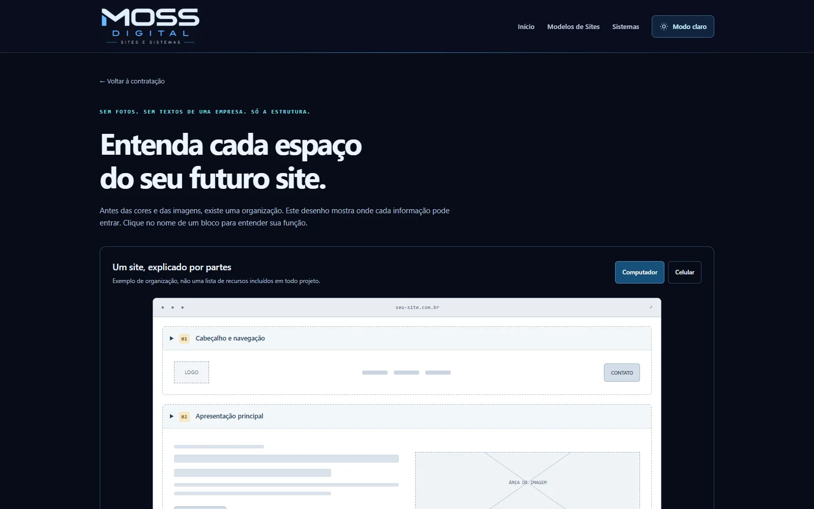

UM SITE, EXPLICADO POR PARTES
Antes das fotos,
entenda a estrutura.
● ● ●CLIQUE EM CADA BLOCO PARA ENTENDER↗

Cabeçalho e bannerServiços e galeriaContato e rodapé
Guia ilustrativo. Seções e funcionalidades são definidas conforme o projeto.